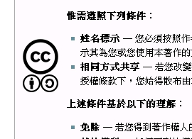

也紀念我們永遠的朋友 李士傑先生（Shih-Chieh Ilya Li）。
維基化．話維基(3)－誰是條目的所有人？
夫人善於自見，而文非一體，鮮能備善，是以各以所長，相輕所短。俚語曰：「家有弊帚，享之千金。」斯不自見之患也。─曹丕《典論．論文》
大概在十八個世紀以前，曹丕評點了當世的文人，開篇一句「文人相輕，自古而然」傳頌千古。1800 年來的文人還是一樣「相輕相礙」，不過文學創作本來就是爭一個主觀的「美」字，這樣的習性是作家們精進的動力，稱不上什麼壞事。不過到了維基百科來，就得盡力的去除編輯者相輕的問題，畢竟這是一個眾人協力才能完成的百科全書，若是因為文字使用的差異而爭議不斷，可是會阻礙百科成長的。
先搶先贏是真理嗎？
為了避免一些無謂的爭議，維基百科社群在一些比較無關條目正確性，單純只是見仁見智的喜好問題上，有所謂「先到先得」的慣例。例如古人的稱謂，有人覺得有名字才正式，有人覺得用通行的字號比較容易理解；維基百科的條目命名有規定要用最常見的名稱、或者是要用名字主人想要用的名稱，然而若這兩個名字使用頻率差不多，也都是主人承認的稱謂，此時單用方針實在難以斷定應該使用哪一個當成條目名稱，這時通常就會看創建條目的人先選了哪一個名字，就用哪一個名字當成條目名。
▲圖1：這個歐吉桑的名字是蘇軾，大家又習慣叫他蘇東坡。到底哪一個當條目名字好？
先到先得的判定，比起很多其他的方針判定起來容易而明確得多，因為到底是誰先創建或編輯了條目，翻找編輯歷史就一清二楚，絕對不會再有模稜兩可的空間。這樣的方便性，再加上這樣的規定保障了早些的編寫者，可以不用接受讓他抓狂的修正，所以「先到先得」的理念不知不覺地被濫用到了許多地方。即使是出現了違反方針的編輯、有爭議的編輯，原本的作者也高舉起「尊重」的大旗，悍然地拒絕後來的更動。
我們不否認，任何一項編輯都是辛苦的，尤其是條目的開拓者或長期維護者，往往花費了更多的心力投注其中，面對著突然而來的修改，修改的結果又不合己見，「相輕所短」的心理便油然而生。然而維基百科是一個多人協作的結晶，把條目當成自己的孩子一樣牢牢抓著，固然展現了一個作者對維基百科的熱誠，但確實也跟「人人都可編輯」的基本核心理念產生矛盾。我們不敢說這是否原本的編輯一定是「家有敝帚」，但是動不動就「享之千金」絕對不是一個好的現象。
站在維基化的思考來看，編輯的衝突都應該儘可能的試圖去妥協，「先到先得」這種慣例，只能在衝突的各方編修內容都百分之百合乎方針，而且只能擇一選擇，不可能妥協的情況下適用。比方說條目的內容用簡體或繁體中文編輯都是被容許的，而且中文的用字也只有簡體與繁體兩套系統可以選擇，不可能出現「不繁不簡」、「又繁又簡」或者乾脆「繁簡各寫一次」這樣的選項，這樣的情況下自然就是先到先得，後來的編輯者不能大規模的把內容全部由繁變簡或是由簡變繁；至於條目內容用語的中立性有爭議，這樣的衝突是可以透過商討更中立的、雙方都可以接受的用詞來解決，原本的作者自然要跟後來的編輯好好協商才是。
打破心結 讓出條目的所有權
在否定了「先搶先贏」的迷思之後，似乎不能避免的情況是，有些貢獻卓著的編者最後妥協於共識，但是也因為這樣而「奇檬子」不好，表面上雖然不再堅持，但是乾脆就退出了編輯做為無聲的抗議。對於這樣的離去相信很多時候讓其他的編輯感到遺憾，只是畢竟不能為了 一個人的心情，而犧牲掉了維基的理念。所以要避免這樣的離去，正確的方向並不是美其名尊重，卻給予原作者更大的特權，而是要在平日就對編輯者特別是新手，做好心理建設，打開他們的心結。
這個絕對要做的「心理建設」，就是要讓出條目的「所有權」。如果一個編輯者時時刻刻念茲在茲「這是我的成果」，對於不合意的編輯就會失去理性以對的空間，完全憑感覺而行。但其實不應該忘記的是，維基百科的內容從來都不是一個人的資產，任何一筆編輯，都是屬於全人類共有的。
最明顯可以看出這種特色的地方是，維基百科在著作權上，採用了極為寬容的條款。像是CC創用授權，維基百科選擇了CC-BY-SA的授權方式，意味著在標註來源，以及用樣開放授權的情況下，你辛苦編寫的條目可以被拿去做任意的轉載、改寫，甚至出版賣錢，而不用付你半毛授權費。這授權背後的意義，當然是擴大了分享的便利性，要讓知識成果交給所有人應用。（順帶一提：另一個授權方式GFDL條款也是便於分享的開放式授權，但由於內容較難說明，此處暫不討論。）
▲圖2：維基百科採用的授權方式之一：CC-BY-SA
除此之外，在編輯頁面時，維基百科的界面也明明白白地寫著「**若您不希望您貢獻的內容被任意修改或被他人再度分發，請不要提交這些內容。**」這也意味著，在提交貢獻的時候，任何一位編者都應該對後續的修改，抱持著歡迎的想法。 當然，我們每一個人幾乎都是在一個對自己文章擁有絕對所有權的環境裡長大，小時候學校裡的作文課程，每一篇文章都是自己完成，最後的分數完全由自己獲得，老師或同學都無法透過替你改文章內容的方式，讓你拿更多的分數；長大以後不管投稿報紙雜誌，還是在部落格上面爬鍵盤，幾乎也都是一個人獨立完成一篇文章，文章內容完全按照自己的想法與意志來決定。經年累月存下來根深柢固的概念，很難在接觸維基之後就完全根除，然而踏出這一步，就是腦袋思路「維基化」的開始了。
共享共作 成就更為不朽的大業
寫到這裡，我還是要請出文章前頭的曹丕先生來做個總結。《典論．論文》的最後一段中對文章的價值提出了深刻的見解，他說「蓋文章，經國之大業，不朽之盛事。年壽有時而盡，榮樂止乎其身，二者必至之常期，未若文章之無窮。」白話一點就是說，人生是短暫的，但是「文章恆永遠，一篇永流傳」。看看這篇文章在經歷了 18 個世紀交替，至今還是出現在台灣的國文課本裡，叫一群高中生一邊背頌一邊氣得牙癢癢，可以說是最好的明證。
比起單人完成的文章來說，維基百科的編寫，卻更是「經世之大業，不朽之盛事」。文章要能夠流傳，必須有好的文筆、有深刻的觀察體會，才能在歷史長河中被淘選出來。若是文筆普通，創意缺乏，要能夠像曹丕一樣留名千古，應該是遙不可及。不過維基百科因為共享共作，就算你的文筆不好，只要先把資料整理出來轉化為條目，自然可以透過其他人的協助潤飾，讓條目漸漸提升，最終成為典範。最後這樣的榮耀雖然無法全歸功於你，但是你的貢獻卻會被銘刻在系統紀錄中，只要維基百科不消失，就算條目內容已經被改到跟原先你編修的樣子完全不同，貢獻依然會永久地存在而不可磨滅。放開對條目所有權的執著，換得的，可是更大的世界。
作者簡介
Reke，台灣維基社群成員，PTT 電影板板主，主業為文字工作者。著迷於電影，耽溺於文字；在現實裡怯弱地柔從，在評論裡驕傲地反抗。電影部落格：https://rekegiga.blogspot.com/
您也許有興趣閱讀以下文章:
- 維基化．話維基(7)－誰才是專家？（下） - 2012-02-17
- 維基化．話維基(6)－誰才是專家？（上） - 2012-02-06
- 維基化．話維基(5)－「官方」的迷思 - 2012-01-16
- 維基化．話維基(4)－我的條目不出名？ - 2011-12-20
- 維基化．話維基(2)－讓政治爭議不再棘手 - 2011-11-09
- 維基化．話維基(1)－從腦袋開始維基化 - 2011-10-24
專欄總覽


E-Mail：contact@openfoundry.org Address：台北市南港區研究院路2段128號 中央研究院資訊科學研究所 . 隱私權條款. 使用條款